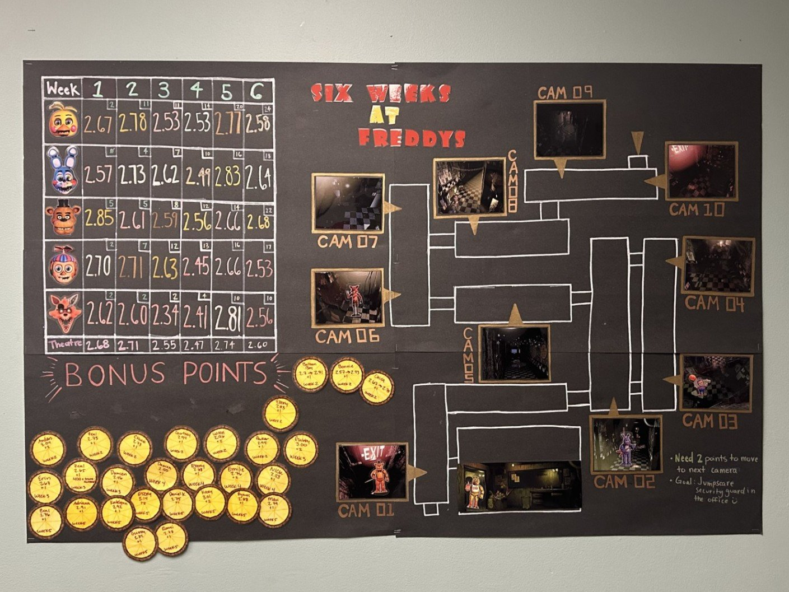
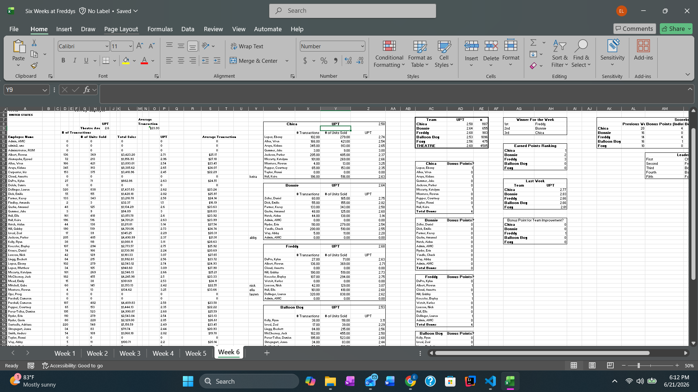

Project Overview
Six Weeks at Freddy's was an employee engagement initiative that I designed while working as a manager at AMC Theatres. The objective was to improve Unit Per Transaction (UPT) performance by encouraging suggestive selling behaviors through a team-based competition.
Rather than presenting employees with weekly reports or basic spreadsheets, I transformed performance metrics into an interactive experience inspired by Five Nights at Freddy's. Employees were drafted into teams represented by different characters, earned points based on weekly UPT performance, and competed to advance through a themed progression system.
Design Process
This project allowed me to combine my Data Visualization education with my management experience. I developed the contest structure, designed the visual assets, created the scoring system, tracked weekly results, and maintained team standings throughout the competition.
One of my main goals was to design a system that would be easy to update every week. I created an Excel workbook that organized each week of the contest into separate tabs, making it simple to enter new UPT reports, calculate team performance, and keep track of progress over time.
The spreadsheet was built to help reduce manual work. It tracked employee transactions, units sold, total sales, average transaction, individual UPT, team UPT, weekly rankings, bonus points, previous week scores, and team improvement points. This made it easier to see which teams were leading, who earned bonus points, and how the leaderboard changed each week.
I also designed the tracker so the results could be quickly translated into the physical contest board. Instead of only looking at raw numbers, managers could use the spreadsheet to update team standings, move teams forward on the board, and explain results clearly to employees.
Instead of presenting employees with raw performance data, I transformed the numbers into a visual story where teams moved through security camera locations inspired by Five Nights at Freddy's. This made performance metrics easier to understand while creating excitement around theatre goals.
Results & Impact
One of the biggest successes of the contest was employee engagement. Crew members regularly checked the board, discussed standings with their teammates, and tracked how their individual performance affected their team's position.
By turning performance metrics into a game, employees became more invested in theatre goals and more conscious of their suggestive selling behaviors. The contest encouraged healthy competition while reinforcing the business objectives that directly influence UPT performance.
This project demonstrates how data visualization principles can be used outside of traditional dashboards and reports. By combining visual design, storytelling, Excel tracking, and performance analytics, I created a system that encouraged participation, improved engagement, and supported operational goals.
Contest Rules & Structure

This graphic introduced the competition structure, scoring system, bonus point opportunities, contest timeline, and prizes. The goal was to make the rules easy to understand while establishing a strong visual identity for the contest.
Physical Progress Board

Weekly standings were displayed on a large tracking board inspired by the security camera system from Five Nights at Freddy's. Teams advanced through camera locations as they earned points, creating a visual representation of progress throughout the competition.
Team Draft & Organization

Employees were drafted onto teams represented by different Five Nights at Freddy's characters. Team-based competition encouraged collaboration and created additional motivation for employees to contribute to their group's success.
Excel Tracking System

Behind the contest was a custom Excel tracking system that I designed to make the competition easier to manage. The workbook tracked weekly employee performance, team UPT, bonus points, previous week results, improvement points, weekly winners, and cumulative leaderboard standings. This made the contest easier to update, reduced manual calculations, and helped keep scoring consistent across all six weeks.